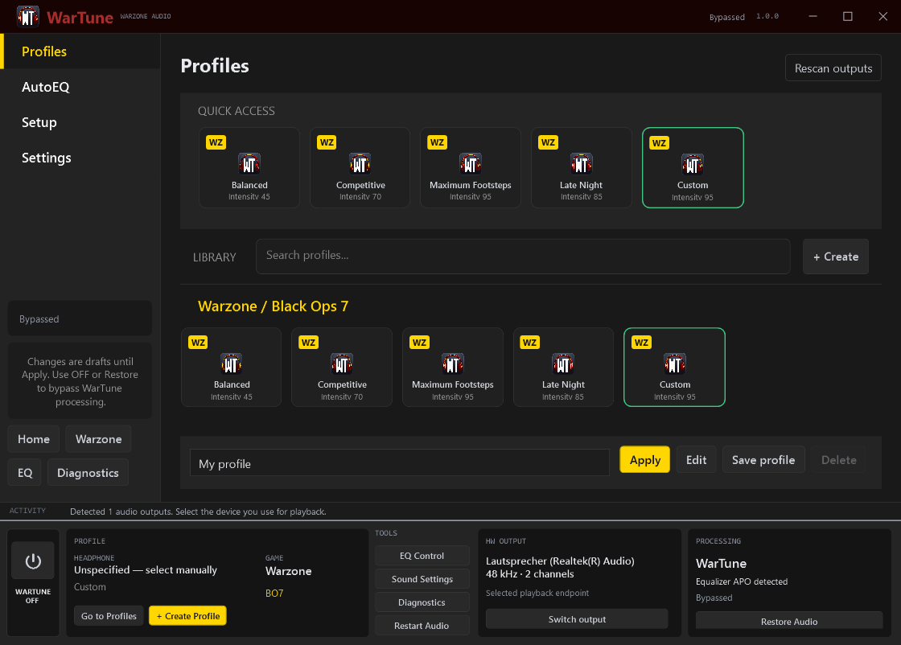

HEADROOM
Preamp gain leaves room for the EQ and dynamics that follow.
GAMING · AUDIO · TECHNOLOGY
THE APP
WarTune brings headphone correction, listening presets and stereo dynamics into one Windows utility. Shape the balance of footsteps, gunshots and explosions, then verify your output before playing.

ACTUAL APP INTERFACE / CLICK TO ENLARGE ↗THE SIGNAL PATH
Preamp gain leaves room for the EQ and dynamics that follow.
Import your AutoEQ PEQ or build and save your own correction.
Adjust the frequency balance with presets and editable filters.
Stereo-linked compression controls loud events, with optional bass compression.
A linked sample-peak ceiling at −1 dBFS finishes the chain.
These controls adjust EQ and dynamics. They do not identify or separate individual game sounds.
TUNED FOR
Use the built-in listening presets as a starting point, then adjust them for your headphones and preferred balance.
Footsteps / gunshot reduction / explosion reduction
Headphone correction / intensity / custom PEQ
GET CONNECTED
The runtime is bundled. Equalizer APO is installed separately and must be attached to the playback device you select.
GET EQUALIZER APO ↗Extract the complete Windows ZIP and launch WarTune.exe. Run Install.ps1 if you want a Start menu shortcut.
Open Setup, scan the PC, select your playback endpoint and enter your headphone model.
Install the x64 version of Equalizer APO. Use its Device Selector to attach it to your endpoint. Restart Windows if requested.
Use stereo at 44.1–96 kHz. Apply a preset, run a low-volume listening test, and set your game to the same output.
GOOD TO KNOW
Yes. The Windows release is free to download, and the source code is available under the MIT license.
A Windows x64 PC, a stereo playback endpoint at 44.1–96 kHz, and Equalizer APO attached to that endpoint. The Windows release includes the .NET Desktop Runtime.
Processing applies to the selected playback endpoint, including other apps using that endpoint. App-specific routing is not included in version 1.0.
No. Windows Audio hosts the processing through Equalizer APO. Use OFF to bypass WarTune's chain or Restore to remove its managed include while preserving unrelated APO configuration.
Version 1.0 supports imported AutoEQ/APO PEQ and locally saved headphone profiles. An online measurement database is not connected.
The app has no account, telemetry or diagnostic upload. Settings stay on your PC, and diagnostic reports are exported only when you choose to save them. This website is hosted by GitHub Pages.
THE PROJECT
An open-source Windows utility for local audio tuning. Follow development, browse the code, or report a reproducible issue on GitHub.
AVAILABLE NOW
Free download. Open source. Local audio processing.
DOWNLOAD FOR WINDOWS RELEASE NOTES & CHECKSUM ↗